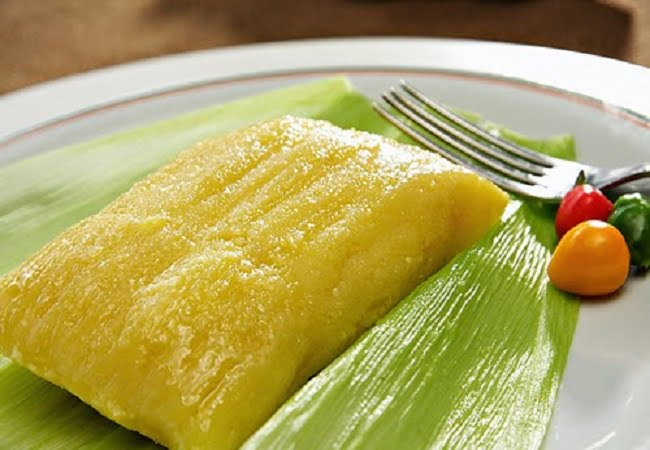

Pamonha

About
Pamonha is a delicacy, common in the Brazilian Northeast and Southeast states such as Goiás, Mato Grosso, Minas Gerais, Paraná, Rondônia, São Paulo and Tocantins. Probably descends from indigenous cuisine.
Ingredients
- 6 corn cobs
- 1 cup of sugar
- 1 pinch of salt
Steps
- Choose the right corn. Not too soft and white, not too hard and yellow. The hair needs to be stuck to the corn on the cob; if it comes off easily, it's past the point.
- Cut the ends of the cob and choose the straws. Discard the outer straw and those very close to the cob. The ideal is to select large straws to make the cups.
- Take your hair. It can be done with a regular toothpick, but you have to remove the hair from the corn.
- Grate and grind the corn. Uncle Ivanildo's grater is made with a nail and zinc sheet. He turns the sheet over and nails it to a wooden board.
- Filter. It is necessary to filter with a fine sieve to avoid corn husks in the dough.
- season. Add the sugar and taste to taste; need to mix well to melt. “You have to make the dough a little sweeter because it cooks in water and loses its flavor a little”, explains Aunt Rosana. “The pinch of salt serves to highlight the sweetness of the pamonha.”
- Make the cups, fill and tie. Boil the straws to soften. Turn the straw around in three or four fingers and leave a little bit left over. Fold the tip up. The dough should be below the mouth of the cup. Fill with a slice of Minas cheese. Repeat the procedure with the top straw: turn around and fold. Tie tightly so it doesn't leak.
- Cook over high heat for an hour. Do not stir the pamonhas while they are cooking in the pan, or the dough will leak. Put straw and corn cobs over them to cover.